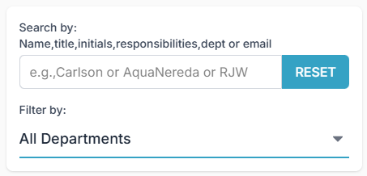
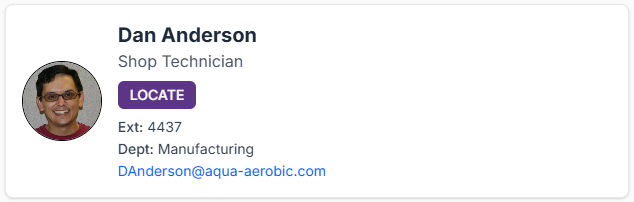

📍 How to Find an Employee
Use the search and filter tools to find employees.
1. Use the Search Bar
Type directly into the search bar to find employees by:
- Name (e.g., "John Davis")
- Job Title (e.g., "Engineer")
- Initials
- Email Address
- Department Name
- Responsibilities (e.g., "AquaNereda")
2. Filter by Department
Click the "All Departments" dropdown menu to select a specific department and instantly narrow the list.
3. Reset Your Search
Click the blue RESET button at any time to clear your search terms and filters, showing all employees again.
📇 Understanding the Results
Matching employees appear on the right side in "cards." Each card provides a quick overview, displaying the employee's photo, name, title, extension, department, email, and key responsibilities.
🖱️ Using the Action Buttons
There are two primary buttons you can click on an employee's card:
LOCATE Button
Click the purple LOCATE button to open a pop-up window. This window will display a map showing that employee's specific office or cubicle location.
GET TO KNOW ME Button
Click the red GET TO KNOW ME button to open a pop-up with additional "get to know me" information provided by that employee.
Note: This button will only appear if the employee has submitted "get to know me" information.
How-To Video
Watch this short video for a complete walkthrough of all AQUALocator features.
Note: More questions? Email IT Helpdesk at ITHelpdesk@aqua-aerobic.com
Frequently Asked Questions (FAQ)
- Q: How do I update my own profile information or photo?
- Click the "Update Profile" link located at the very top-left of the AQUALocator page (above the main header). This will take you to the profile update form.
- Q: Why is the "LOCATE" button gray and disabled?
- A disabled LOCATE button means that a location map has not yet been assigned to that employee in the system.
- Q: Why is the "GET TO KNOW ME" button missing for some people?
- This button only appears if an employee has submitted "get to know me" information.
- Q: I searched for someone, but no results appeared. What should I do?
- First, double-check your spelling. If you're still not finding them, try searching for just their last name. You can also click the RESET button to clear all filters and see the full list.